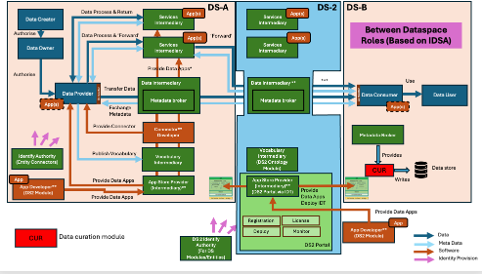
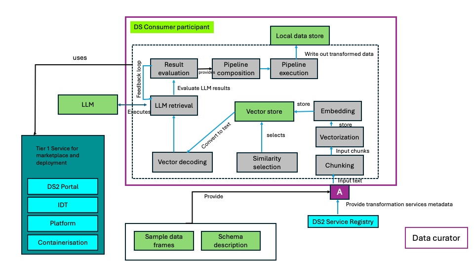
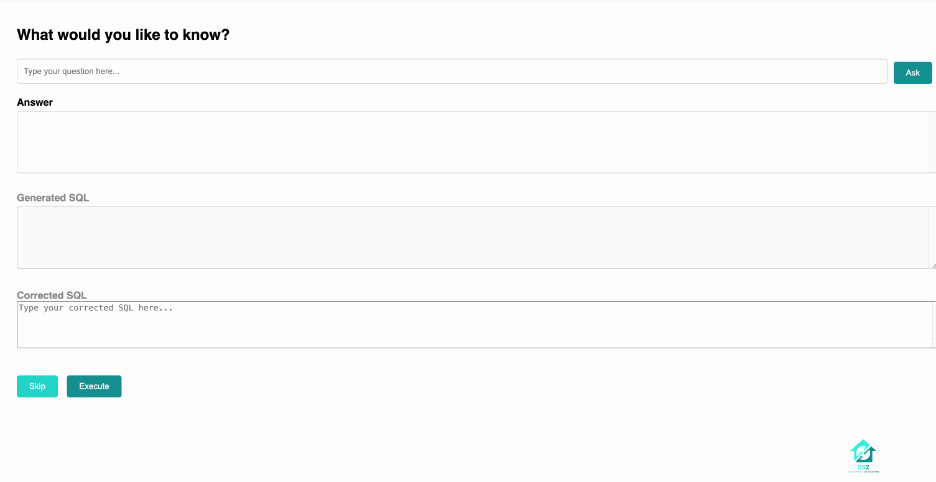

CUR - DS2 Data Curation module
| Project Links |
|---|
| Software GitHub Repository https://github.com/ds2-eu/cur.git |
| Progress GitHub Project https://github.com/orgs/ds2-eu/projects/39 |
General Description
Purpose: Data obtained from disparate sources runs the risk of remaining siloed unless it can be joined with similar data from other data sets. The process of joining data may require curation of data, such as the conversion of data formats or a matching of disparate column names. Manual curation of datasets, however, can be a labour-intensive task, and not suited to DS2’s dynamic nature of federating dataspaces. Additionally, filtering data based on a set of conditions from even a single data source is a task that typically will require programming skills and is both time-intensive and costly.
Instead, the CUR module establishes automatic curatation and federation of data through machine learning, allowing users to query data through natural language, without having to understand how to connect or convert data obtained from different sources.
Description
In order to allow querying of data obtained from various sources, the Curation model harnesses the power of two different technologies, namely relational databases and machine learning Large Language Models (LLMs). The module stores obtained data in a relational database, and then uses machine learning combined with a knowledge of the database schemas to convert user queries in natural language to database queries (i.e. SQL queries). Given the proper prompts, the LLM is able to automatically determine how to match columns in different tables, even when column names or data formats may differ. This module uses several different techniques to increase the chances of correctly answering a user query, such as evaluating the results of the generated query before they are returned to the user, and RAG technology to seed LLM SQL generation with examples of similar user queries and their correctly generated SQL calls from previous history.
There still will be cases where the generation of an SQL query corresponding to a user's question will fail. For example, if the available data sources relate to weather conditions in Africa and the user asks a question about food prices in Europe, query formulation will naturally - and correctly - fail. However, there will be other cases where a query which is appropriate for the data sets will not be properly generated due to reasons of complexity. In this case, the execution chain of the module will detect the failure and request human-in-the-loop intervention. At this point, the original query can either be abandoned, or the generated SQL query can be manually corrected and re-executed. If the subsequent execution succeeds, the user query and corrected SQL will be stored in a vector store to seed future, similar user queries. Of course it is not expected that the typical user will correct SQL queries, but rather that the CUR module will be trained by an expert in advance to cover anticipated user queries.
Architecture
The figure below represents the module fit into the DS-DS environment. 
The figure below represents the actors, internal structure, primary sub-components, primary DS2 module interfaces, and primary other interfaces of the module. 
Component Definition
The CUR module consists of two main parts - a configuration component to set up the database tables from the data sources and the component which is given a reference to the stored database base and performs the pipeline required to allow a user to get information from the data sources using natural language queries. In particular, this latter component is composed of a number of stages which include:
- The creation of a GUI for user input
- The creation of an SQL query from a natural language query
- The execution of the generated SQL query
- Evaluation of results of the SQL query
- Human-in-the-loop injection of a corrected SQL query
- Reformulation of the query results to generate a more readable answer
Within the above stages, there are a number of substages such as RAG retrieval, vector store population, prompt creation etc.
Screenshots
The following shows how a natural language query asking about pollution levels in the vicinity of the monitoring station, "MS Rakičan" can be executed. 
Commercial Information
| Organisation (s) | License Nature | License |
|---|---|---|
| IBM | Consortium Confidential | TBD |
Top Features
- Extraction of data based on natural language queries
- Support for a wide variety of user languages
- Automatic federation of disparate data sources
- Human-in-the-loop intervention allows the LLM to self-learn
- RAG technology supporting hybrid retrieval with both semantic and keyword search
- Easy to add additional data sources
How To Install
Setting up the database
Data obtained from the data sources will accessed from their URLs and stored into a database. The recommended database is postgresql due to it support for geospatial queries. The configuration of the database is as follows:
- Install postgresql. See https://www.postgresql.org/download
- After installing postgresql, it is recommended to add the environment variables, DS2_DB_USERNAME and DS2_DB_PASSWORD to your shell, with username and database password values which were used in installing postgresql in the previous step.
- Edit the file, "federation_config.json" as follows:
- Change the value of the "database", "host" and "port" entries as required to match the values used installing the postgresql database.
- This configuration file is pre-configured with data sources for the DS2 Slovenian, Romanian and Greek use cases. Other use cases or additional data sources can be added by following the same format. Note that currently the "open_api" field is not used by the software.
- Any API tokens required by the REST call are shown within brackets, for example:'Authorization: Bearer
'. At runtime, the software will attempt to replace the bracketed value with an environment variable of the same name - for example the environment variable, "DADS_BEARER_TOKEN" in this example. Therefore, configure these values in your environment.
- To create the SQL database the first time, run
python create_database.py --prefix [name]. The value for [name] needs to correspond exactly to a URI entry name in the federation_config.json file (for example, "Slovenia", "Romania" or "Greece"). As an example, to build the database for the DS2 Slovenian use case, we would run:python create_database.py --prefix Slovenia.
Running the CUR module
In order to run the CUR module, the correct python environment needs to be created. It is recommended that you create a virtual environment as follows:
python -m venv [name]where "name" will be the name of the virtual environment, for example, "venv".- Activate the virtual environment: On Mac or Linux this will be:
source [name]/bin/activate, where the value of "name" is from the previous step. - Install inside the virtual environment the required modules:
pip install requirements.txtx
Once the environment is set up, the CUR module can be run. Note that the CUR module requires access to an LLM. The access key for the LLM can be defined by configuring and environment variable, LLM_APIKEY, in your sheel. If this is not configured, then at runtime the module will request the key value.
The CUR module is invoked as follows:
python ds2_federation_main.py --prefix [prefix] --url [url]
where the value for "prefix" is the as described in the previous section for setting up the db, and the value for "url" is the base address of the LLM (i.e without the model name). CUR uses llama-3-3-70b-instruct as its default model. This can be overridden by using the --name and --id command line values (e.g. --name llama-3-3-70b-instruct --id meta-llama/llama-3-3-70b-instruct). Note that the accuracy of the NL2SQL translation in the CUR module may depend on the model used.
Requirements
An external LLM is required. No particular requirements for CPU, memory or storage have been identified.
Using the dashbutton requires a configured keycloak server to be running.
How to use
The CUR GUI is web-based. When CUR is started as described in the previous step, it will print out where it can be accessed, typically this will be at: http://127.0.0.1:5000 for an installation on the local host.
To search for data, enter in the What would you like to know? box your query and then click the Ask button. Note that the query needs to relate to values in the data sets configured in the federation_config.json file. If the query succeeds, the answer will appear in the Answer box. If the query fails, then you will be instructed to either correct the generated SQL query, or enter "skip". If you choose to correct the SQL, enter this in the Corrected SQL box and then click on Execute, otherwise click on the "Skip" button to move on to a new query.
Using the dashbutton
If the dashbutton is used, then a keycloak server needs to be configured.
Reference: https://github.com/ds2-eu/portal/tree/main/dash-button/web-component
Run keycloak with:
docker run -p 8080:8080 -e KEYCLOAK_ADMIN=admin -e KEYCLOAK_ADMIN_PASSWORD=admin quay.io/keycloak/keycloak:25.0.2 start-dev
Go to the keycloak admin screen:
http://localhost:8080/admin/master/console/
Click on "Keycloak" in the upper left corner to get to "Create realm"

Create a realm with name "demo".
Click on "Clients" and then "Create Clients"